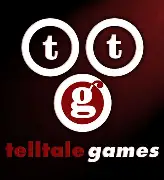
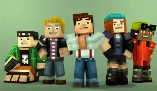
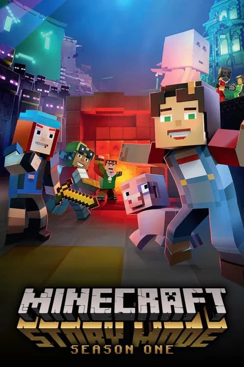

Overview
Minecraft: Story Mode, known with the initials "MCSM", is an episodic adventure spin-off series developed by Telltale Games in collaboration with Mojang Studios. It is based in the Minecraft universe, including The Overworld, The Nether, The End, and other dimensions (Portal Network). It had 13 episodes in three episode packs: Season Pass (Season 1), the Adventure Pass, and Season 2.
History
Minecraft: Story Mode was a game made by Telltale Games and Mojang. In Late 2012, the idea of the game arose while working on another game. In Early 2013, Telltale began negotiations between themselves and Mojang Studios, development for the game began. During this stage many aspects of the main game came to be, such as Jesse being the main character rather than Steve or it being rated for kids rather than their usual audience. On December 2014, the project was announced to the public and a trailer was showcased during Minecon 2015. The game was published on the 13 of October 2015 and its first season was concluded on December 19, 2017 with a total of eight episodes overall.

Characters
There are 5 main charecters that are in the series. Jesse (you) Petra, Lukas, Olivia, and Axel (and jesses pet pig named Rueben but later has a tragic death at the end of episode 4) which becomes the new order of the stone. the first order of the stone had ivor, Gabriel, Soren, Eligard, and Magnus. Both of the order of the stones correlate to each other with their personalty and colors (navy, cyan, white, read and green), (in order of how i put their names and the colors). in the first 4 seasons the villan was ivor and the wither but ivor became good and helped in season 4 to kill the wither (all of this done because the original order of the stone never actualy killed the ender dragon and used the command block) after the first 4 episoodes, the next 4 episodes ranged with one villan for each episode which was from Adein (lukas's former freind), Cassie Rose (this episode being 6 is knowwn for having very famouse minecraft youtubers at the time named Dantdm, Stampylongnose, LDshadowlady, StacyPlays and CaptainSparklez) Pama (a computer made by Harper which was part of the old builders) and then in the last episode being Hadrian and Mevia (being the two other builders except Harper and Otto) In season 2 there was 5 episodes and the villan was the Admin (also known as Romeo) and 5 new people is part of the group (depending on your actions towards them) Jack, Norm, Radar, Stella (and her pet lama named Luna) Xara (also a admin but loast her powers) and many other charecters in both seasons in every episode.

images goes to more infomation about characers in depth
Story
The story revolves around you (Jessie) and your 2 freinds (Olivia and Axel) and your pet pig Rueben as you 3 go to endercon to do a building contest ageinst other people including the Ocelots which lukas and adein is part of. after some time and it becoming late you are in the woods with Rueben after a scandle with Aiden. Petra saves you from mobs for her to ask her to be part of her "shady" buesiness which was giving Ivor a wither skull which helps him create the wither. Gabrial asks you to reunite the Order of the stone and you decise to go to Elegard or Magnes. After that you start to look for Soren and your first attempt at killing the Wither fails and either kills Magnes or Eligard. Ivor comes back and helps you after some time which takes you to his lab where you find out the Order of the stone did not actualy kill the dragon and where Ivor has a weapon to distroy the comand block inside of the wither. your last attempt of killing the wither is a sucsess but at he lost of your pet pig Rueben. after this you become the New order of the stone. the last 4 episodes of season one revolves around you, Petra, Lukas, and Ivor where you go to the portal network made by the Old builders and you try to get home whitch makes them have to fight the older builders for their portal key to find their home. In season 2 you are now the Leader of Beacontown (which is an upgraded version of there old town in season 1 episode 1) and you and Petra go to have an adventure whitch leads into you haveing a gautlent and Jack and Norm help you get rid of it and you have to fight the admin. whilest petra try and figure was she wants to do with her life since your other freinds (Lukas, Axel, and Olivia) have found out what life they want to have and where they want to stay.

click here for MEMES